Ecology without class struggle is just gardening. What To Fix is an indie magazine born with the intention of pointing out why mainstream ecology is currently failing, highlighting the link between human rights and enviornmentalism.
Alongside the magazine, a board game was developed in order to translate in broader terms the magazine’s ethos and content to a younger audience.
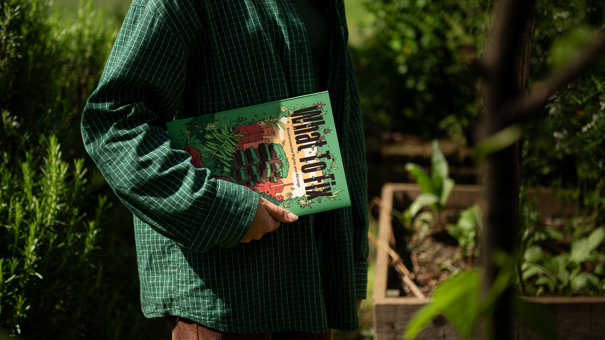
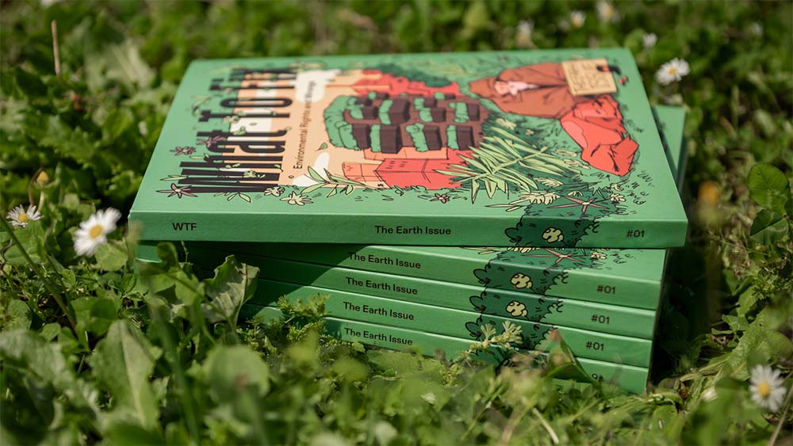
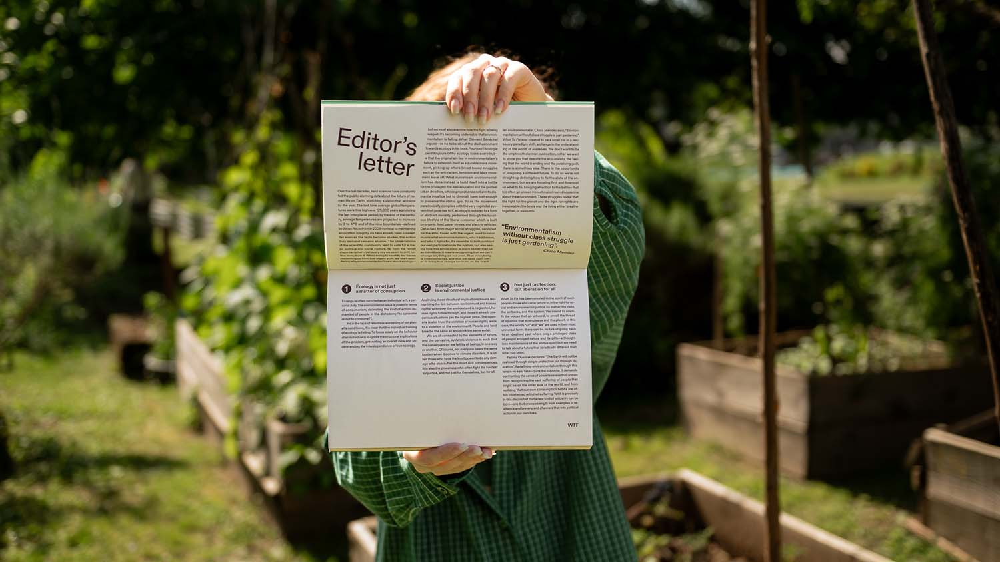
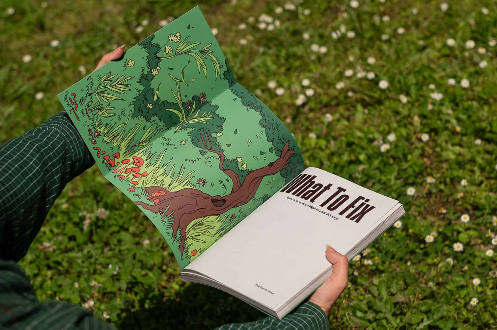
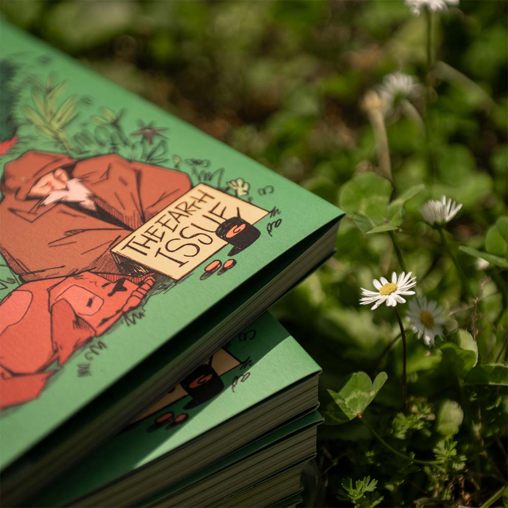
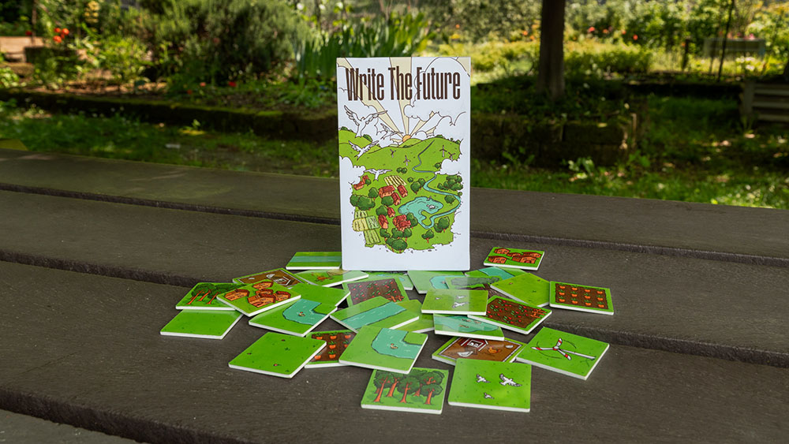
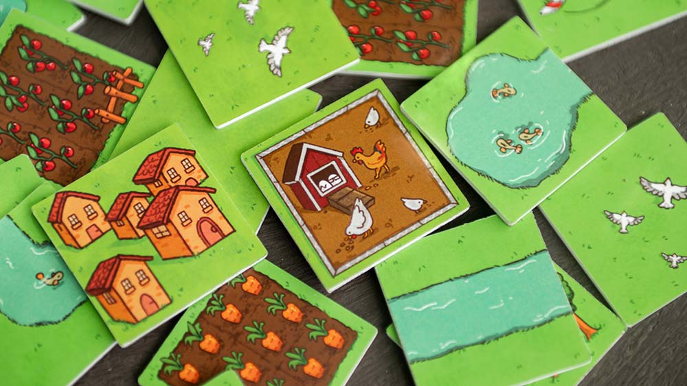
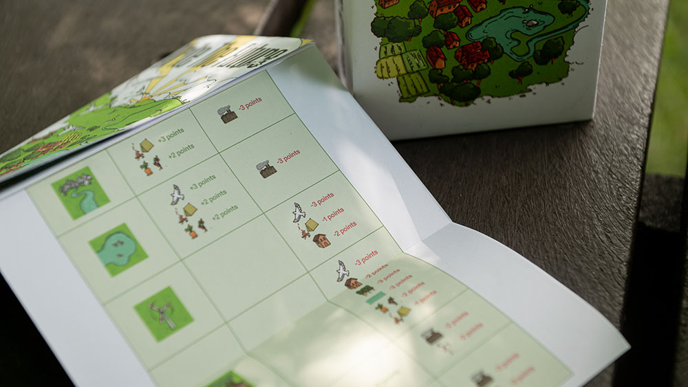
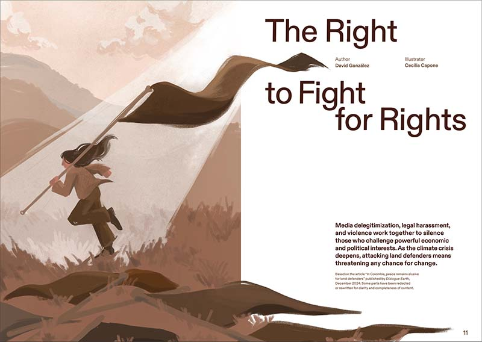
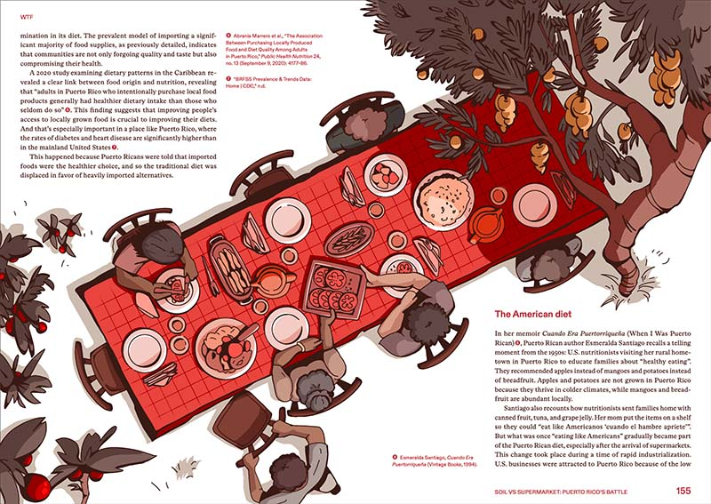
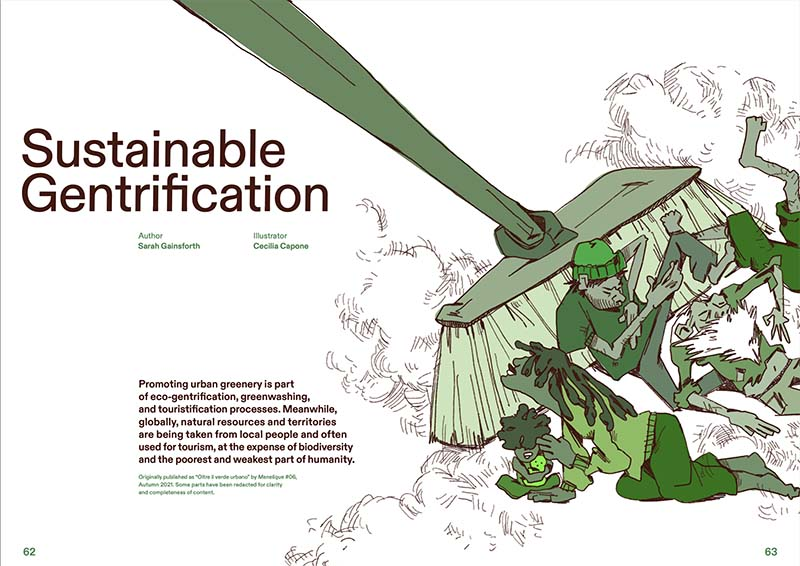
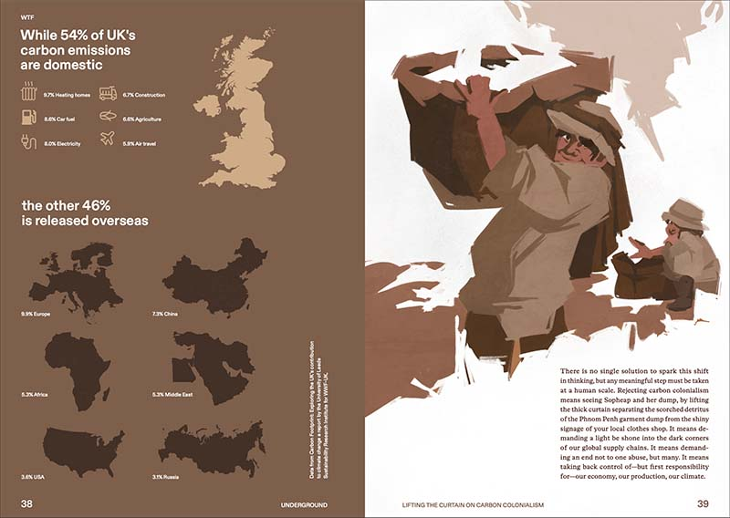
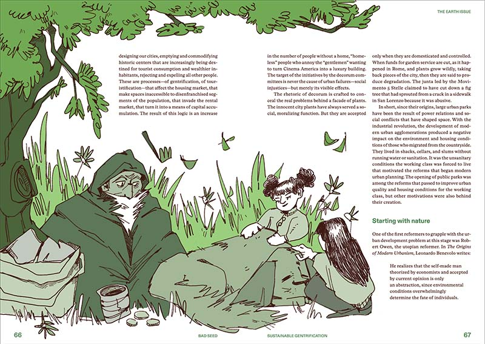
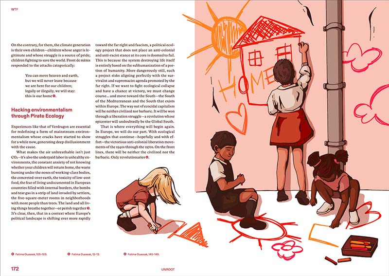
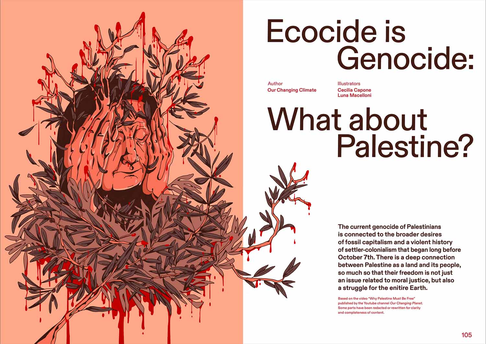
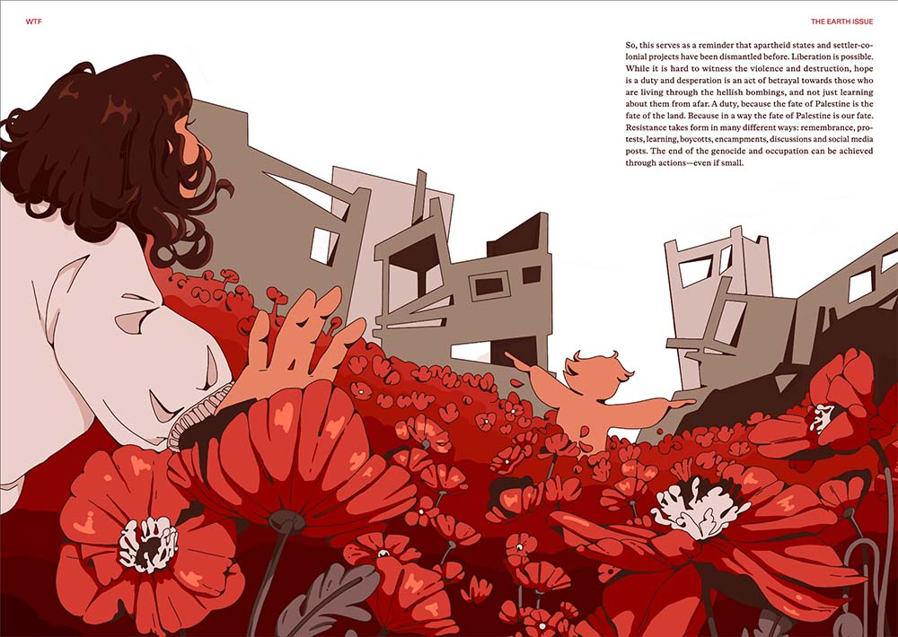
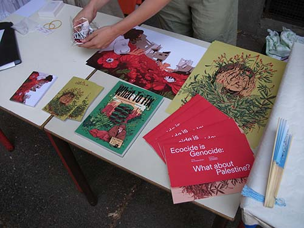
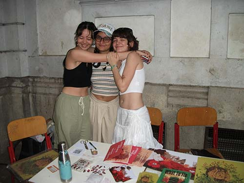